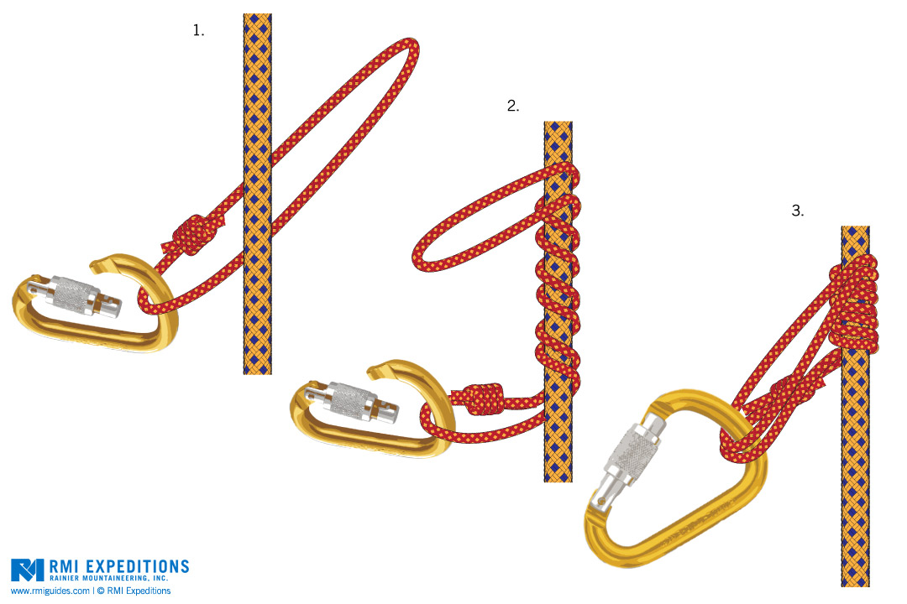

[转寄/推荐][转贴][删除][修改][设置可RE属性][上一篇][返回讨论区][下一篇][回文章][同主题列表][同主题阅读][从这里展开]
发信人: crazycams(小蚊子), 信区: outdoor 标 题: 【转载】绳降 自动抓结的做法及注意事项 发信站: 饮水思源 (2015年04月28日00:06:32 星期二) 转自盗版岩与酒BBS http://bbs.rockbeer.org/viewthread.php?tid=1241670776 绳降时做一个自动抓结(auto block)可以大大增加安全系数，比如你可以双手放开拍照， 要是被落石、碎冰砸昏了还能吊在绳子上，等你醒过来继续下降。 这里说说自动抓结的做法及注意事项。 1. 抓结一般用5毫米的尼龙辅绳做一个绳套，请购买攀登专用的辅绳，而不要用旧鞋带之 类的。 2. 绳套打结用双渔人结。 3. 如果用有承力腿环的安全带，那么belay device放在belay loop上，自动抓结用一个小 锁或者主锁连在腿环上。自锁结的做法主要有以下三种，根据个人喜好和需要调节。比如 达到同样的自锁效果，第一和第二种做法需要绳子的长度不同，所以你可以选不同的自锁 结来调整长度。 4. 绳套的长度非常关键，根据你要抓的主绳的粗细，是否结冰，摩擦力多大，做到有一定 的调节余地 。 5. 做抓结配上最常用的绳子和你的安全带，进行调试，之后基本可以固定这个长度。如果 绳子、安全带或者使用者任何之一有更换，需要重新检查绳套的长度是否还合适，进行调 整后再用 （有不加调整，结果用了抓结没有自锁，出溜挂掉的）。 6. 有些人喜欢用延长的绳降设置，和不延长的比有利有弊。好处是如果带一个重物降，更 容易控制；另一个好处是如果安全带没有能够承力的腿环，那么belay device和自锁结都 必须拴在belay loop上，所以通过延长调节长度。 弊端是多一个装置，多一个出事的环节 。 7. 攀冰的时候用法也基本相同，注意冰冻或者湿透的绳子会改变摩擦力，最后一张图中所 示绕了三圈可以锁紧。 8. 自动抓结用的绳套可以用很长时间，一般如果一年爬40天，正常使用的情况下能用3- 5年没有问题。 9. 长发者绳降时请把头发扎起来，以防头发缠进保护器里。 http://bbs.sjtu.edu.cn../htm/pics/1430150308318610.jpeg 自锁结的做法主要有以下三种，根据客观情况、个人需要和喜好调节。 autoblock 结（法式抓节）  screen.width - 200){this.width = screen.width - 200}"> |
[转寄/推荐][转贴][删除][修改][设置可RE属性][上一篇][返回讨论区][下一篇][回文章][同主题列表][同主题阅读][从这里展开]